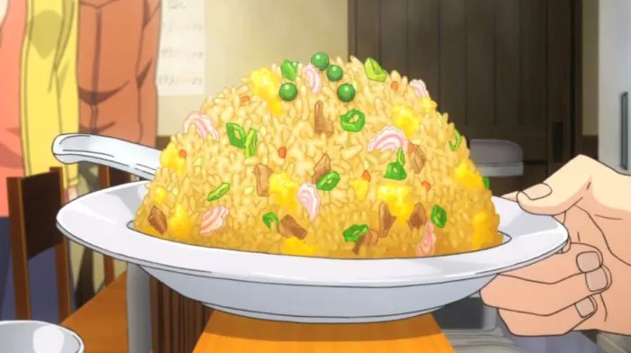

Shrimp Fried Rice

Description
A simple dish that will take less than 40 minutes to make.
Ingredients
- 3 cups of water
- 1 and 1/2 cups of uncooked white rice
- 4 tablespoons vegetable oil
- 1 cup of fresh bean sprouts
- 1/2 cup of chopped onion
- 1 and 1/2 cups of cooked medium shrimp that is peeled and deveined without tail
- 2 large eggs
- 1/4 cup chopped green onion
- 1 teaspoon salt
- 1/4 teaspoon ground black pepper
Steps
- Bring water to boil in a saucepan. Add rice and stir. Reduce heat, cover, and simmer for 20 minutes.
- Heat large wok for 2 minutes. Once wok is hot, pour in vegetable oil, beansprouts, and onions. Mix well and cook for 3 minutes.
- Mix in rice and shrimp and cook for 3 minutes stirring constantly.
- Add in eggs, green onion, salt, black pepper and cook for 4 minutes stirring continuously unlit eggs are cooked.